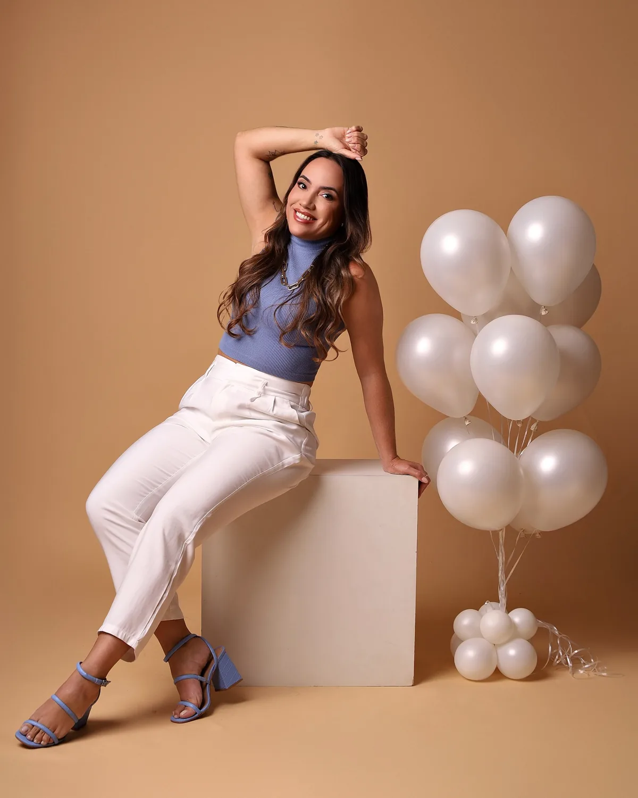
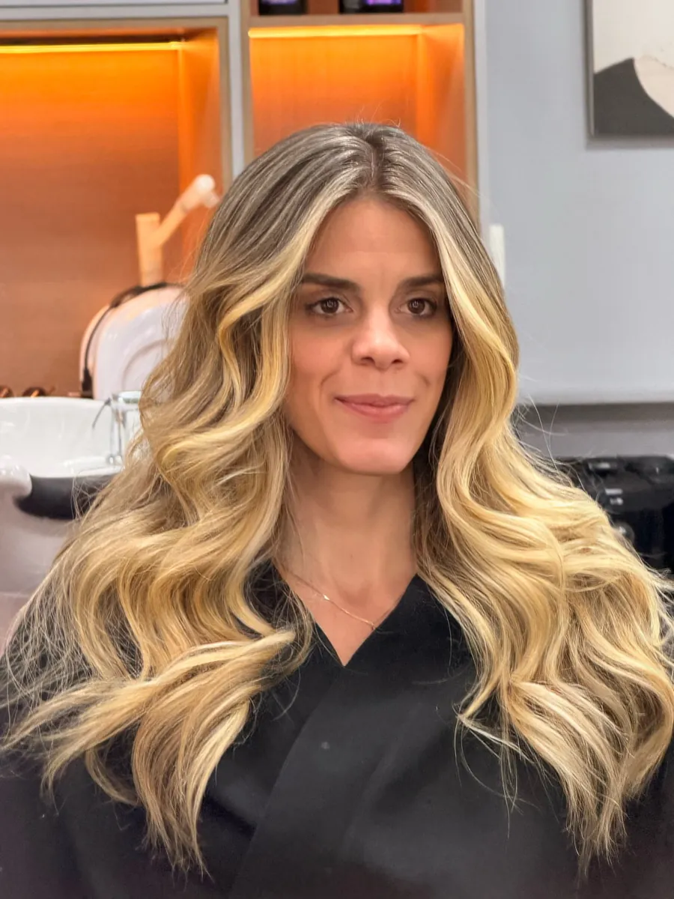
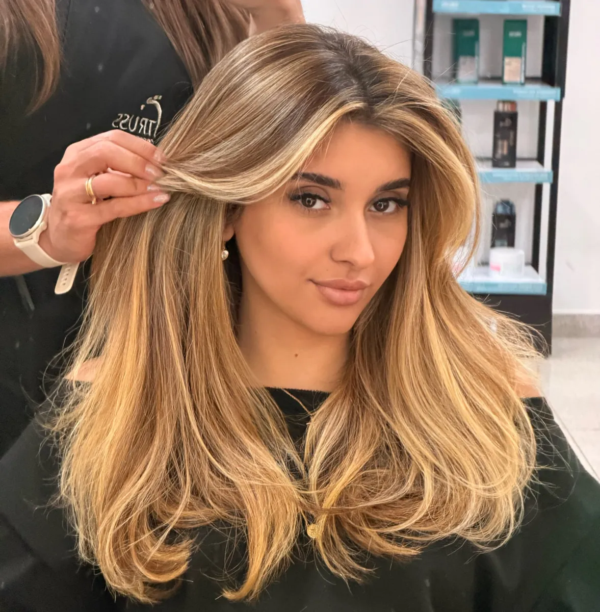
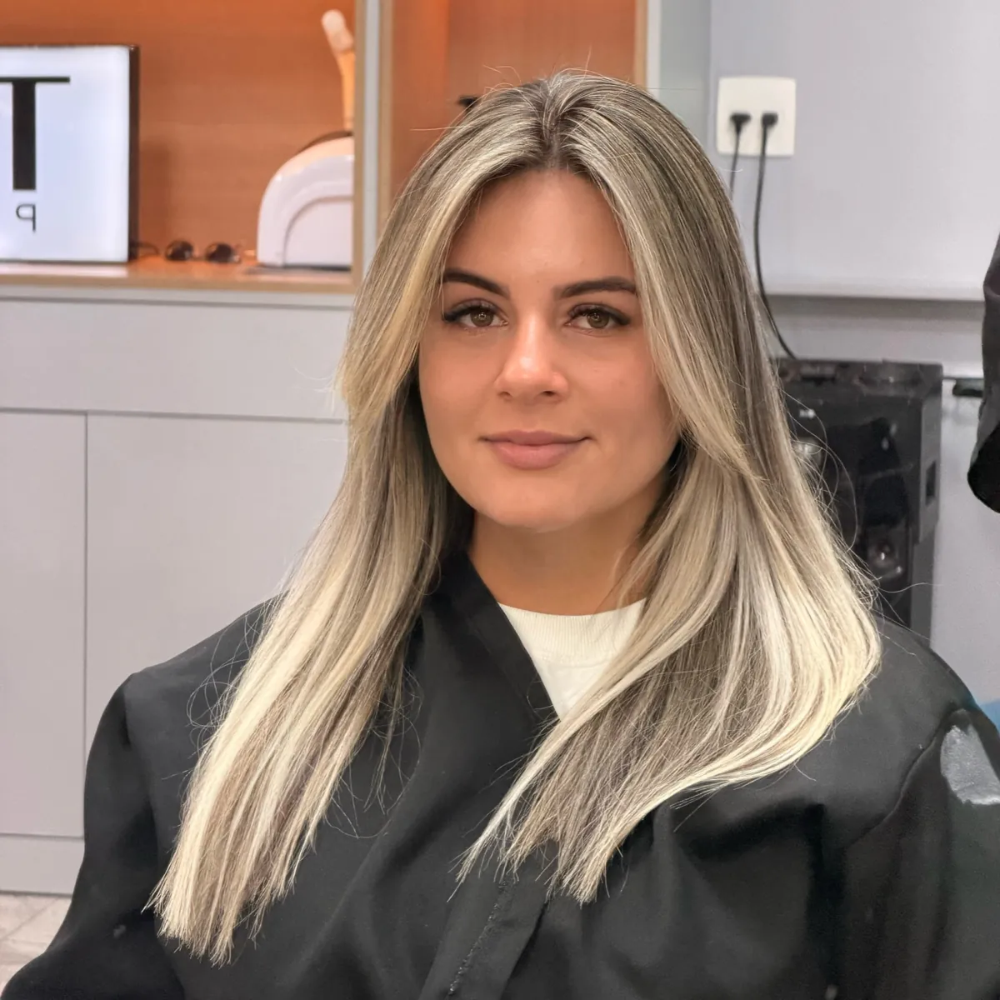
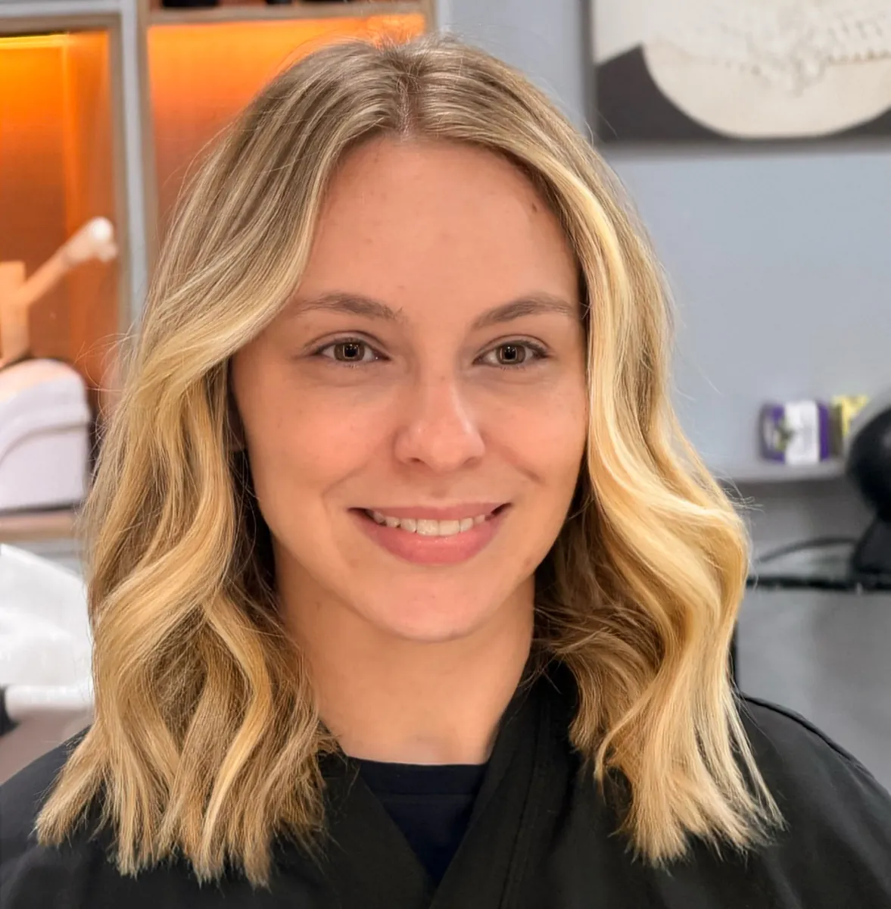
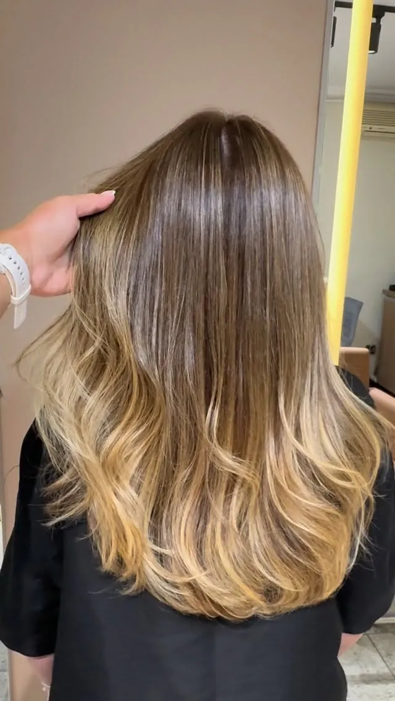
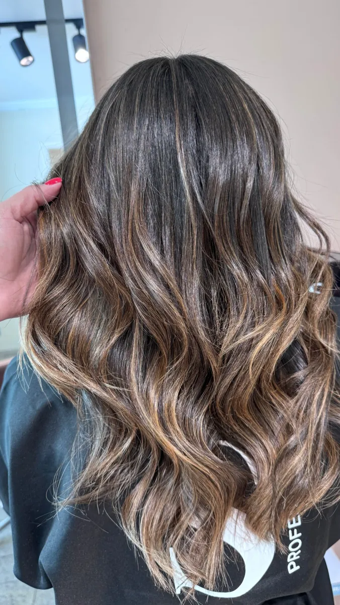
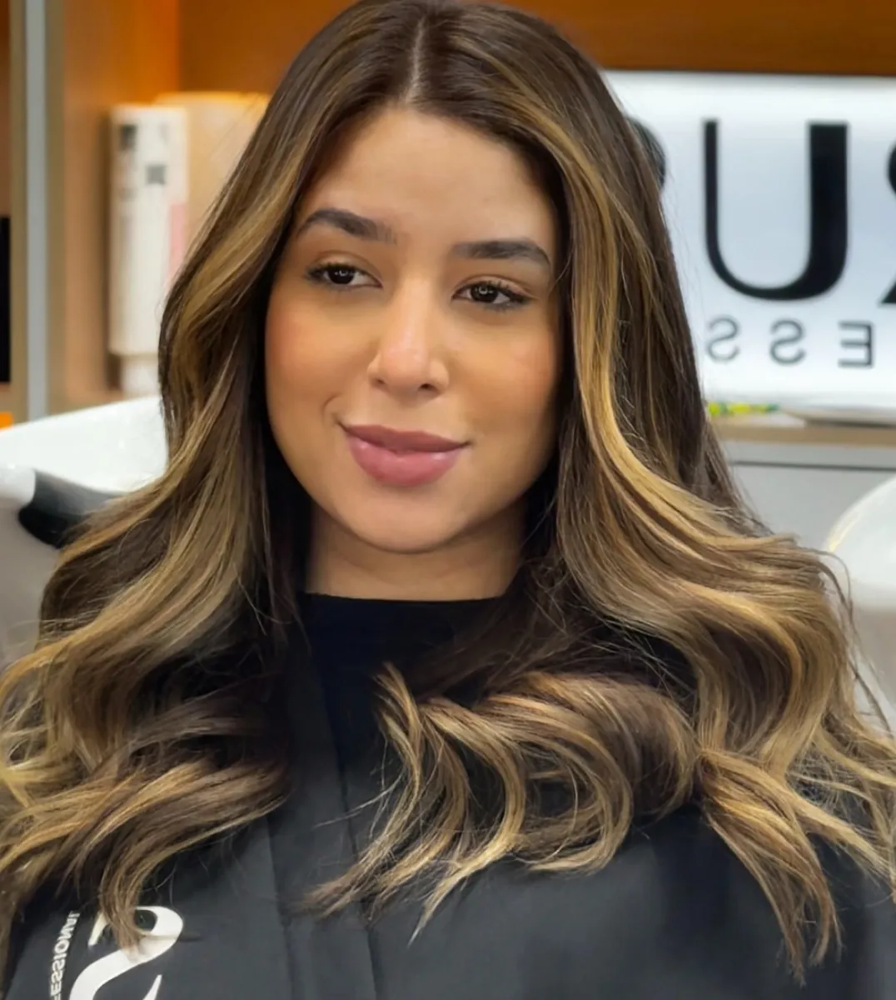

Loiros
O universo dos loiros no trabalho de Van.
Vamos conversarEspecialista em loiros & mechas

Loiro · Mechas · Iluminado · Brilho
Agendar horárioSobre Van
Van Flauzino.
Especialista em loiros & mechas.
Beleza e rotina de salão fazem parte do universo de Van. Loiros, mechas e morenas iluminadas aparecem nos registros do trabalho compartilhados no perfil.
Conheça @vanflauzinoEspecialidades
Conheça os serviços do perfil de Van.
O universo dos loiros no trabalho de Van.
Vamos conversarMechas, luz e cor nos registros do salão.
Vamos conversarTons iluminados sobre a base castanha.
Vamos conversarServiço presente no perfil. Consulte Van para saber mais.
Vamos conversarGaleria







Cor. Textura. Movimento.
Mais trabalhos no InstagramDúvidas frequentes
Converse com Van para saber mais
sobre o atendimento.
O agendamento é pelo WhatsApp de Van. Inicie a conversa por aqui.
Loiros, mechas e iluminados, morena iluminada e terapia capilar. Fale com Van para saber mais sobre cada serviço.
No Instagram @vanflauzino, com registros do trabalho e da rotina de salão.
Consulte as informações do atendimento diretamente com Van pelo WhatsApp.
Van FlauzinoLoiros & mechas
Agendar horário